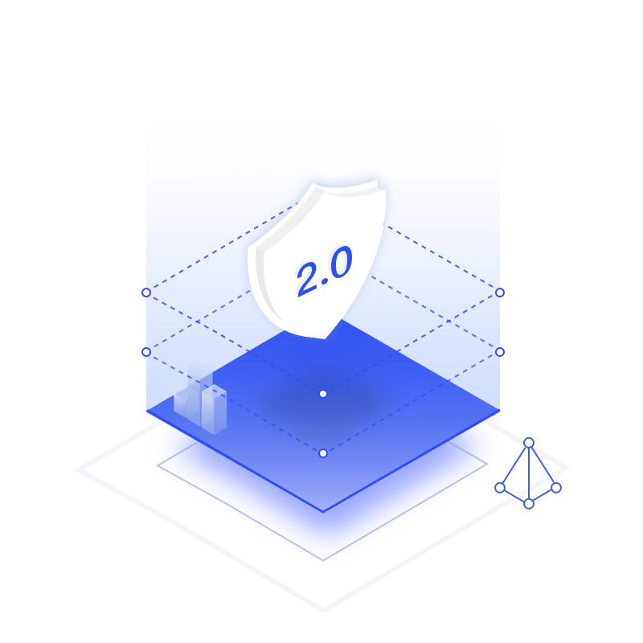
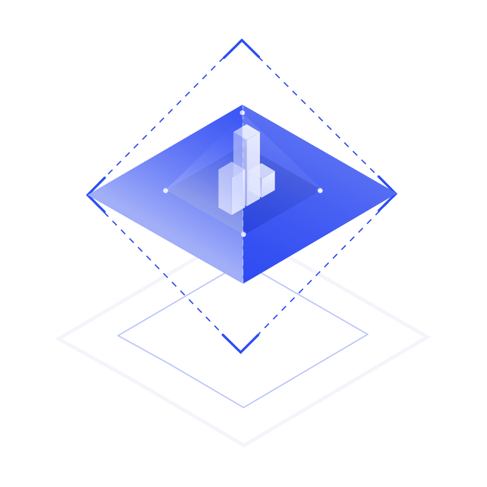
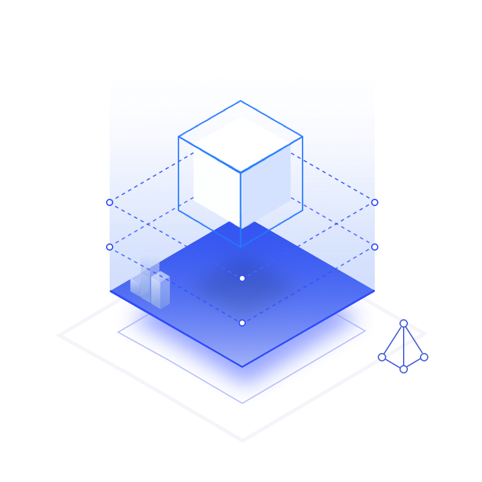

等保2.0解决方案

网络安全等级保护制度是我国在国民经济和社会信息化的发展过程中的一项基本制度，
网络安全等级保护建设思路既体现了对原有防护体系思想的继承，又体现了新IT技术架
构下对等级保护建设的新要求、新思路。奇安信以“一个中心、三重防护”要求为基础，
构建满足等级保护2.0要求的技术解决方案。
查看详情
相关产品：
天眼新一代威胁感知系统
新一代智慧防火墙
终端安全管理系统
适用行业：
政府 | 银行 | 能源 | 医疗 | 教育
大数据安全解决方案

奇安信大数据安全解决方案结合奇安信多年的安全大数据运营经验及通过数据分析、人工智能、
专家审核生成的高质量的威胁情报，并通过云端数据产生的威胁情报与本地原始数据融合分析提
升检测能力，融合态势感知技术建设本地的安全感知、预警、响应一体化平台。
查看详情
相关产品：
态势感知与安全运营平台
威胁情报平台
大数据智能建模平台
适用行业：
政府 | 银行 | 能源 | 医疗 | 教育
零信任解决方案
随着信息技术的快速发展，云计算、大数据、物联网、移动互联、人工智能等新兴技术
给信息安全带来了新挑战。为应对新IT时代的网络安全挑战，零信任安全应运而生。奇
安信零信任身份安全解决方案，正是基于零信任架构所实现的访问控制安全整体实践。
查看详情
相关产品：
安全接入网关系统
多因子认证与单点登录系统
可信访问控制台系统
适用行业：
政府 | 银行 | 能源 | 医疗 | 教育
态势感知解决方案
我国的关键信息基础设施和重要信息系统保护工作对网络安全态势感知关键技术
和系统建设有着非常明确和迫切的要求。在大安全时代中，网络攻击将从更多的
维度不断带来新威胁与挑战。在此背景下，网络空间需要重新定义，网络空间安
全态势感知也将具有更大的重要性。网络空间安全态势感知平台是集感知、管理、
预防、控制、打击、反制能力为一体的大数据体系，定位于能够有效、高效地治理、
保卫网络空间的安全。
查看详情
相关产品：
威胁情报中心
态势感知安全运营服务
智能流量管理系统
适用行业：
政府 | 银行 | 能源 | 医疗 | 教育
云安全解决方案

奇安信基于“互联网+”的云安全规划与建设实施方法论，将整个云计算等保合规实施过程划分
为“三大阶段”，核心实施过程划分“五大步骤”，最终帮助客户设计、部署从云内网络层、虚
拟机层、应用层直至数据层的全面安全防护方案。
查看详情
相关产品：
统一服务器安全管理系统
运维安全管理系统（云堡垒机）
适用行业：
政府 | 银行 | 能源 | 医疗 | 教育
安全运营解决方案

没有网络安全就没有国家安全，就没有经济社会稳定运行。网络安全工作的重点与难点
之一在于安全规划的落地与实践。安全运营服务通过“人+流程+数据+平台”，构建可持续
安全监测和响应能力。通过设置专业的技术人员岗位，明确岗位职责，通过制定标准工
作流程，规范协同机制。
查看详情
相关产品：
应急响应服务
终端安全运营
态势感知与安全运营平台
适用行业：
政府 | 银行 | 能源 | 医疗 | 教育